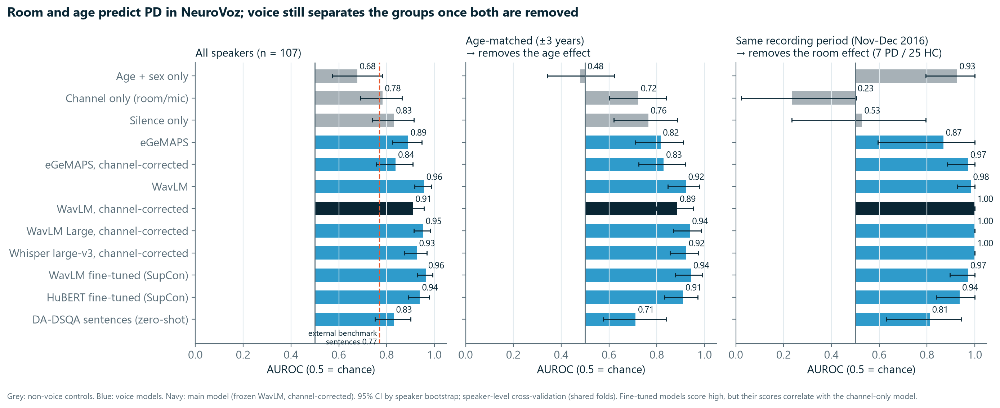
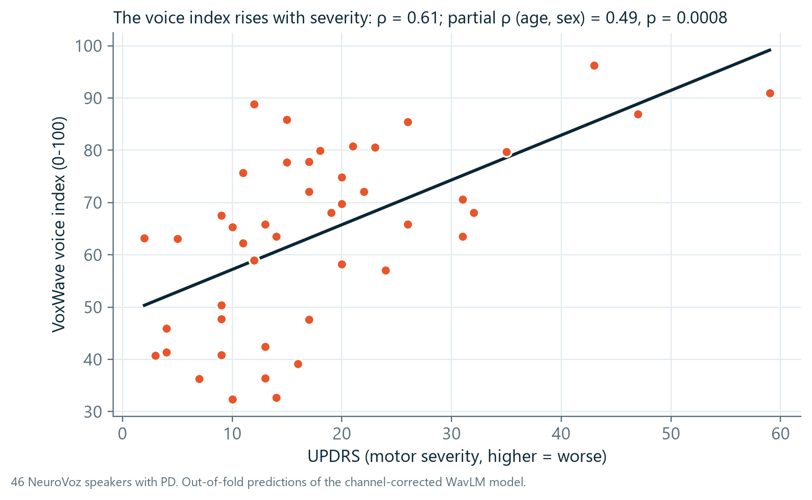
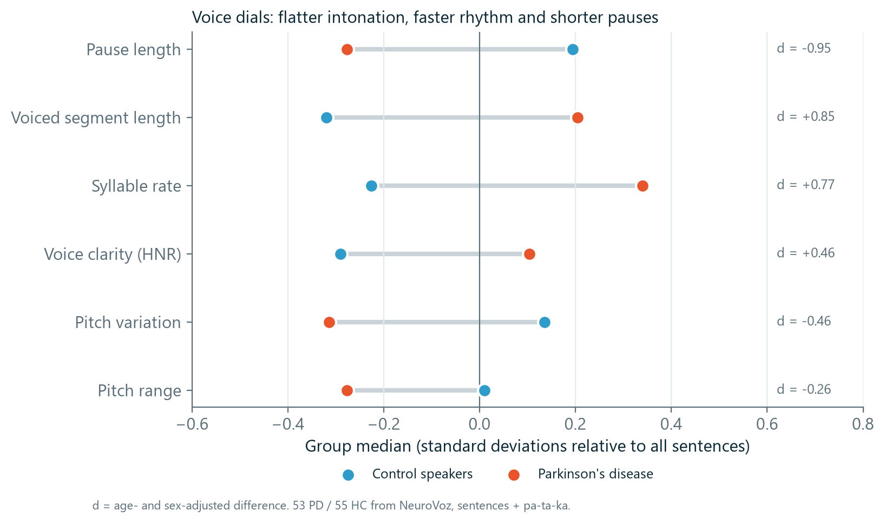
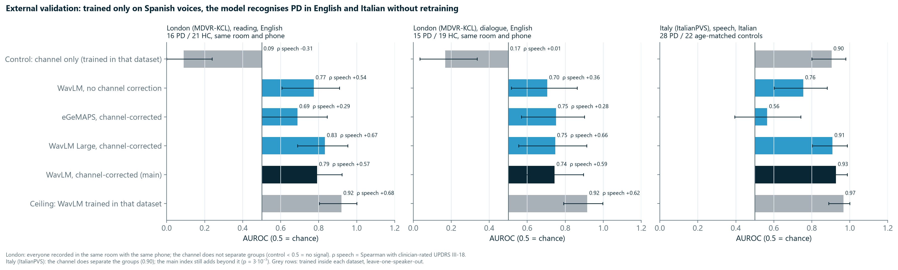
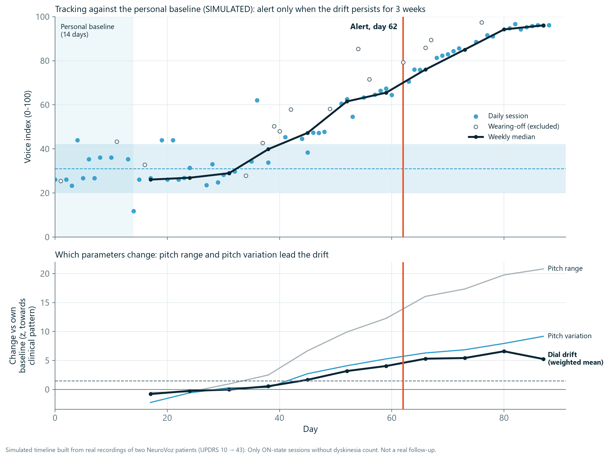

Background. Speech changes are frequent and early in Parkinson's disease (PD), yet patients are assessed only at clinic visits spaced months apart. Clinical speech corpora also contain recording shortcuts (room, microphone, recording period) that inflate reported accuracy.
Methods. On NeuroVoz (108 speakers, Spanish), we built a voice index from a frozen WavLM embedding with recording-channel descriptors removed inside each training fold. We evaluated it with speaker-level cross-validation, confound controls, external corpora in English and Italian, and designed a personal-baseline tracking rule.
Results. Silence alone predicted diagnosis (AUROC 0.83). After channel correction the model reached AUROC 0.91 (95% CI 0.86–0.96), held after age matching, and its index followed motor severity beyond age (partial ρ = 0.49). Without retraining it recognised PD in English recorded in a single room (0.79) and tracked clinician-rated speech impairment; trained without any Spanish it recognised PD in Spanish (0.83). Fine-tuned models scored higher but learned the room.
Conclusions. Channel-corrected self-supervised speech features capture transferable markers of PD and its severity. Validating between-visit tracking now requires longitudinal home recordings, not larger models.
Parkinson's disease (PD) affects between 7 and more than 10 million people worldwide. Up to 90% of patients develop hypokinetic dysarthria: reduced pitch and loudness variation, altered speech rate and pausing, and imprecise articulation. Speech changes can precede clear motor decline; in the WATCH-PD smartphone cohort, reading pitch range was already reduced in patients whose speech the neurologist rated as normal [23]. Clinical follow-up nevertheless relies on visits spaced by months, so wearing-off fluctuations, bad weeks and slow progression reach the clinic only as recollections. A short daily voice check on the patient's own phone could fill that gap if it measured disease-related change rather than noise.
Two obstacles stand in the way. First, most public PD speech corpora are cross-sectional: each person is recorded once, so they support learning which voice features go with PD and with severity, not how a person's voice drifts. Second, clinical corpora often record patients and controls in different places or periods. Models can then learn the room or the microphone instead of the voice (a "Clever Hans" effect). Jouaiti and Ma recently showed that on NeuroVoz a classifier trained on the first second of audio performs close to one trained on full recordings [2], and an independent benchmark on the same 108 NeuroVoz speakers reported AUROC 0.77 for sentences and 0.75 for pa-ta-ka [6], well below many published figures.
This study had five objectives:
The intended use is monitoring, not diagnosis: the system reports change relative to the person's own baseline and leaves clinical decisions to the neurologist.
Table 1. Corpora used in this study.
| Corpus | Language | Speakers | Tasks used | Clinical labels | Role |
|---|---|---|---|---|---|
| NeuroVoz [1] | Spanish | 53 PD / 55 HC (108 with metadata) | 16 read sentences, pa-ta-ka (1,794 recordings); vowels for comparison | UPDRS (n = 47), H&Y (n = 52), age, sex | Development, cross-validation |
| MDVR-KCL [8] | English | 16 PD / 21 HC (reading); 15 / 19 (dialogue) | Read passage, spontaneous dialogue; Moto G4, one room, 26–29 Sep 2017 | H&Y, UPDRS II-5, UPDRS III-18 (speech) | External test, multi-corpus |
| ItalianPVS [9] | Italian | 28 PD / 22 elderly HC / 15 young HC | Reading passage, sentences, words, syllable repetition | Age, sex (no UPDRS/H&Y in this release) | External test, age control |
| UCI Telemonitoring [7] | English | 42 PD | Sustained /a/, features only, ~weekly for 6 months | motor UPDRS (interpolated between 3 visits) | Longitudinal check |
NeuroVoz: six IDs with audio but no metadata were excluded. PD mean age 71.1 ± 10.7 y vs controls 64.0 ± 10.4 y; 50 of 53 patients recorded in ON medication; UPDRS 2–59 (mean 17.6); 39 of 52 patients in H&Y stages 1–2. ItalianPVS: PD 67.2 ± 8.7 y, elderly controls 67.1 ± 5.2 y, young controls 20.8 ± 2.7 y; 10 PD were recorded at 44.1 kHz and all controls at 16 kHz. Licences: NeuroVoz CC BY-NC-ND 4.0; MDVR-KCL and ItalianPVS CC BY 4.0.
The NeuroVoz recording confound. Patients were recorded mostly between January and June 2016 and controls mainly in late 2016 and in 2018. Only November–December 2016 contains both groups (7 PD, 25 HC). This window removes the recording-period difference but not the age difference: within it, age and sex alone separate the groups with AUROC 0.93, because the controls recorded then were younger. Both controls are therefore needed together (Section 3.1).
All NeuroVoz models use the same five speaker-level folds (stratified by group and age tercile, fixed seed), so no speaker is ever in training and test. Hyperparameters were fixed in advance and never tuned on test folds. Recording-level probabilities are averaged per speaker. Discrimination is the area under the ROC curve (AUROC) with a 95% percentile interval from 2,000 bootstrap resamples of speakers. Each model is also evaluated in:
Whether a voice score adds information beyond the channel score is tested with a likelihood-ratio test between nested logistic models of diagnosis on logit(channel score) and on logit(channel score) + logit(voice score), with one degree of freedom.
eGeMAPS. The 88 eGeMAPS v02 functionals [13] were extracted with openSMILE [14] per recording, plus recording duration.
Channel descriptors. To describe the room and microphone rather than the voice, each recording is cut into 25 ms frames with RMS level Lf (dB). We compute the noise floor N = P5(L), the peak P = P99(L), the signal-to-noise ratio P − N, and the spectral distribution of the quietest 10% of frames as the log share of energy in five bands (0–0.3, 0.3–1, 1–3, 3–8 and 8–16 kHz):
This gives eight descriptors c per recording. Silence-only features are eGeMAPS computed on the concatenation of frames with Lf ≤ min(max L − 35 dB, P30(L)) when they total at least 0.3 s.
Audio is resampled to 16 kHz and passed through a frozen encoder (WavLM Base+ [10] as the main model; WavLM Large, Whisper large-v3 [12] encoder and HuBERT [11] in comparisons). With hidden states hl,t for layers l = 0…L and frames t = 1…T, the recording embedding is the time-pooled representation averaged over all layers, a choice fixed in advance:
Standardizing a feature matrix does not remove a channel effect, because background noise is already integrated into each functional or embedding. We therefore remove, inside each training fold, the part of every feature that is linearly explained by the channel descriptors. With standardized features X and design matrix C = [1, c], the coefficients are fitted on training rows only and applied to both training and test rows:
The residual features are re-standardized, reduced to 128 principal components (for embeddings) and passed to an L2-regularized logistic regression (C = 0.01 for embeddings, 0.1 for eGeMAPS). The VoxWave voice index is the predicted probability scaled to 0–100:
where z is the PCA projection of X̃. The speaker score is the mean over that speaker's recordings. XGBoost (300 trees, depth 3) was used as a non-linear baseline for eGeMAPS.
Partial Spearman correlation. Severity associations inside PD are controlled for age and sex. Ranks of the score x and of the clinical scale y are regressed on [1, age, sex]; the Pearson correlation of the residuals is the partial ρ, tested with Student's t on n − 2 − k degrees of freedom (k = 2 covariates):
p-values across the 89 features are corrected with the Benjamini–Hochberg procedure [18].
Adjusted group difference. For each feature standardized to unit variance, d is the coefficient of the PD indicator in the linear model x = β0 + d · PD + β1 age + β2 sex.
Within-session reliability. With speaker means and pooled within-speaker variance across a speaker's recordings, the one-way intraclass correlation [20] and its Spearman–Brown extension to a session of k = 17 recordings are:
The minimal detectable change at 95% confidence, in units of the between-speaker standard deviation, is
The channel sensitivity of a dial is the R2 of a linear regression of the recording-level feature on the channel descriptors. Dials were selected with criteria fixed in advance: |d| ≥ 0.35, R17 ≥ 0.70, channel R2 ≤ 0.30, and a sign consistent with UPDRS. Features are z-scored within each sentence task before averaging, to remove sentence-content effects.
Supervised contrastive fine-tuning. Following the recipe of Malekroodi et al. [4], WavLM Base+ and HuBERT Base were fine-tuned on GPU (Modal) within each training fold. The CNN feature encoder was frozen, 5 s random crops were used with batch size 32 and AdamW (learning rate 2·10−5 for the encoder, 10−3 for the heads, weight decay 0.01), with early stopping on an inner validation split by speaker. A projection head was trained with a supervised contrastive loss [15] on normalized projections z, temperature τ = 0.07 and negatives up-weighted by β = 1.5:
A classification head was trained with class-balanced cross-entropy on a stop-gradient copy of the pooled embedding.
Signal enhancement. Before feature extraction we applied a 60 Hz zero-phase high-pass filter, single-channel WPE dereverberation (10 taps, delay 3, 3 iterations), stationary spectral-gating noise reduction, gain normalization of the loud frames to −20 dBFS, and VAD trimming. The silence control was then repeated on the same time stretches that were silent in the original file.
Other variants. Larger encoders (WavLM Large, Whisper large-v3); layers recommended in the literature (WavLM Large layer 21; Whisper layers 17–20); fusion with six explicit descriptors (F0 mean and variation, loudness mean and variation, HNR, syllable rate); an ordinal severity target (HC = 0, PD = 1 + percentile rank of UPDRS) with ridge regression; and post-hoc channel residualization of fine-tuned logits.
DA-DSQA. A pre-trained dysarthria severity model [5] (Whisper large-v3 encoder plus a small probe; score 1–7, trained on English) was re-implemented from its published architecture and applied without retraining, with one Whisper window per speaker for concatenated sentences and one for pa-ta-ka.
Models trained on all NeuroVoz speakers were applied without retraining to 5 s windows containing at least 60% speech; the speaker score is the window mean. In ItalianPVS all audio was first resampled to 16 kHz so that both groups share the same bandwidth. Folder names in ItalianPVS contain real names; speakers were assigned anonymous identifiers and files were stripped of metadata before any processing. Inside each external corpus we also trained, with leave-one-speaker-out, a channel-only model (room control) and a WavLM model (in-domain ceiling).
For multi-corpus training, every training window i of speaker s in corpus c received a weight that gives each corpus the same total weight and each speaker the same weight within its corpus. Young Italian controls were never used for training:
We report leave-one-corpus-out (train on two corpora, test on the third) and pooled 5-fold cross-validation by speaker.
For each person, a session yields a voice index v (Eq. 4) and the dials. Sessions are valid if self-reported ON, without dyskinesia, and within 240 minutes of the last levodopa dose; acute ON/OFF effects on F0 and intensity have standardized mean differences of about 0.4–0.5 [27], the same order as a year of progression. The baseline uses the first 14 days (at least 8 valid days) of daily medians:
After the baseline, weekly medians Vw of the daily values are converted to robust z-scores, and an alert is raised at the first week closing a run of three consecutive weeks above threshold with a non-negative Theil–Sen slope [19]:
To report which parameters change, each dial d is expressed as a robust z against its own baseline, oriented by od ∈ {−1, +1} so that positive means "towards the clinical pattern", and combined with stability weights ωd (1.0 for F0 variation and pitch range, 0.7 for rhythm and pauses, 0.3 for HNR):
Dt goes through the same alert rule, and the alert names the two dials with the largest recent oriented change. The thresholds (z ≥ 1.5, 3 weeks) were calibrated by simulation: 90 days, three recordings per day, 80% adherence, day-to-day AR(1) noise (φ = 0.5) plus recording noise, 300 simulations per setting.
Longitudinal check. On UCI Telemonitoring, features were log-transformed where skewed, expressed as robust z against each subject's first 28 days, and mapped to change in motor UPDRS by leave-one-subject-out ridge regression. Alerts were evaluated against worsening of at least 3 UPDRS points; the null distribution came from circular shifts of each subject's series, which keep autocorrelation but break alignment with time.
A classic eGeMAPS logistic model reached AUROC 0.895 on sentences, 0.870 on pa-ta-ka and 0.892 on both. Sustained vowels were weaker (0.763; 0.628 age-matched), consistent with the external benchmark [6]. However, two models that never see the voice also separated the groups: silence-only (0.829) and channel-only (0.783). Inside the shared recording window the channel model fell to 0.234, while voice models kept separating. Voice added information beyond the channel score (likelihood-ratio p < 10−8 for every eGeMAPS variant).
Table 2. Discrimination on NeuroVoz (speaker-level 5-fold CV). AUROC with 95% bootstrap CI; age-matched subset; shared recording window (7 PD / 25 HC); Spearman ρ between the model's speaker scores and those of the channel-only model.
| Model | AUROC (95% CI) | Age-matched | Nov–Dec 2016 | ρ with channel |
|---|---|---|---|---|
| Age + sex only | 0.68 (0.57–0.78) | 0.48 | 0.93 | 0.16 |
| Channel descriptors only | 0.78 (0.69–0.87) | 0.72 | 0.23 | 1 |
| Silence only (eGeMAPS) | 0.83 (0.74–0.92) | 0.76 | 0.53 | 0.84 |
| eGeMAPS | 0.89 (0.82–0.95) | 0.82 | 0.87 | 0.77 |
| eGeMAPS, channel-corrected | 0.84 (0.76–0.91) | 0.83 | 0.97 | 0.26 |
| WavLM Base+, no correction | 0.96 (0.92–0.99) | 0.92 | 0.98 | 0.64 |
| WavLM Base+, channel-corrected (main) | 0.91 (0.86–0.96) | 0.89 | 1.00 | 0.22 |
| WavLM Large, channel-corrected | 0.95 (0.91–0.98) | 0.94 | 1.00 | 0.25 |
| Whisper large-v3, channel-corrected | 0.93 (0.88–0.97) | 0.92 | 1.00 | 0.19 |
| WavLM fine-tuned (SupCon) | 0.96 (0.93–0.99) | 0.94 | 0.97 | 0.59 |
| HuBERT fine-tuned (SupCon) | 0.94 (0.89–0.98) | 0.91 | 0.94 | 0.67 |
| DA-DSQA, sentences (zero-shot) | 0.83 (0.75–0.90) | 0.71 | 0.81 | 0.34 |
The shared window removes the recording period but not age: there, age and sex alone reach 0.93. The silence model covers the 86 speakers with enough silence. Window AUROCs rest on 7 patients and have wide intervals.

The channel-corrected WavLM Base+ model was declared the main model before external testing. It separates PD from controls with AUROC 0.91 (0.86–0.96), keeps 0.89 in the age-matched subset (where age alone gives 0.48), and its score correlates only 0.22 with the channel-only score, against 0.64 without correction.
Within PD, the index follows motor severity beyond age and sex (Table 3, Figure 2). No model followed Hoehn & Yahr: 39 of 52 patients are in stages 1–2, which leaves little variance to explain.
Table 3. Association of speaker scores with clinical severity inside PD (Spearman ρ; partial on age and sex).
| Score | ρ UPDRS | Partial ρ UPDRS (p) | Partial ρ H&Y |
|---|---|---|---|
| WavLM Base+, channel-corrected (main) | 0.61 | 0.49 (0.0008) | 0.07 |
| WavLM Base+, no correction | 0.48 | 0.38 (0.011) | −0.11 |
| WavLM Large, channel-corrected | – | 0.41 (0.006) | −0.11 |
| Whisper large-v3, channel-corrected | – | 0.31 (0.040) | −0.10 |
| eGeMAPS, channel-corrected | 0.38 | 0.29 (0.054) | 0.08 |
| eGeMAPS, no correction | 0.11 | 0.11 (n.s.) | – |
| Ridge regression eGeMAPS → UPDRS | 0.32 | – | – |
| DA-DSQA, sentences | 0.31 | 0.08 (n.s.) | −0.02 |
| DA-DSQA, pa-ta-ka | 0.34 | 0.33 (0.037) | −0.06 |
| Age alone | 0.45 | – | – |
n = 46 patients with UPDRS and age (51 with H&Y). Channel correction is what makes the eGeMAPS score follow severity (0.11 → 0.29).

Thirteen of 89 eGeMAPS features met all dial criteria. The most interpretable are in Table 4 and Figure 3. Patients showed flatter intonation and, unexpectedly, faster speech with shorter pauses: sentences lasted 2.36 s versus 2.75 s when measured on the active speech span only, so this is not a trimming artefact. This is compatible with the festination-like rate acceleration of hypokinetic dysarthria, but may also reflect the age difference. No single feature survived FDR correction against UPDRS: the dials describe the PD–control difference, while severity is followed better by the multivariate index.
Table 4. Dials exposed by the system. d: age- and sex-adjusted PD–control difference (SD units); partial ρ with UPDRS inside PD; session reliability R17; MDC95 of one session in between-speaker SD; tracking weight ω.
| Dial (eGeMAPS feature) | d | Partial ρ UPDRS | R17 | MDC95 | ω |
|---|---|---|---|---|---|
| Pause length (MeanUnvoicedSegmentLength) | −0.95 | −0.18 | 0.77 | 1.34 | 0.7 |
| Voiced segment length (MeanVoicedSegmentLengthSec) | +0.85 | 0.27 | 0.89 | 0.91 | 0.7 |
| Syllable rate (loudnessPeaksPerSec) | +0.77 | 0.17 | 0.85 | 1.06 | 0.7 |
| Pitch variation (F0 semitone stddevNorm) | −0.46 | −0.17 | 0.95 | 0.60 | 1.0 |
| Voice clarity (HNR mean) | +0.46 | 0.14 | 0.99 | 0.32 | 0.3 |
| Pitch range (F0 semitone pctlrange) | −0.26 | −0.22 | 0.95 | 0.61 | 1.0 |
Pitch range was added on literature grounds (WATCH-PD [23]) despite a small effect in short NeuroVoz sentences. Reliability is within one session: NeuroVoz has no repeated days, and smartphone test–retest ICCs across days are lower (0.26–0.33 in mPower [25]). For rhythm and pause dials, the MDC of a single session exceeds the whole PD–control difference, so dials are only interpretable aggregated over weeks.

Table 5. Improvement experiments, all channel-corrected unless stated. The reference is the main model (first row).
| Variant | AUROC | Age-matched | Partial ρ UPDRS | ρ with channel | Verdict |
|---|---|---|---|---|---|
| WavLM Base+, layer mean (main) | 0.91 | 0.89 | 0.49 | 0.22 | Reference |
| WavLM Large, layer mean | 0.95 | 0.94 | 0.41 | 0.25 | Better detection, same room dependence |
| WavLM Large, layer 21 | 0.94 | 0.93 | 0.44 | 0.25 | No gain over layer mean |
| Whisper large-v3, layer mean | 0.93 | 0.92 | 0.31 | 0.19 | Weaker severity |
| Whisper large-v3, layers 17–20 | 0.91 | 0.91 | 0.33 | 0.12 | Least room-dependent |
| Whisper large-v3, layer 32 | 0.89 | 0.87 | 0.39 | 0.12 | – |
| WavLM Base+ + 6 explicit descriptors | 0.92 | 0.89 | 0.45 | 0.23 | No gain |
| Fusion WavLM + eGeMAPS | 0.91 | 0.90 | 0.44 | 0.23 | No gain |
| Ordinal severity target | 0.92 | 0.89 | 0.44 | 0.21 | No gain (46 labelled PD) |
| Ridge on UPDRS, PD only | – | – | 0.13 | 0.11 | Too little data |
| WavLM fine-tuned, no correction | 0.96 | 0.94 | 0.44 | 0.59 | Learns the room |
| WavLM fine-tuned, logits channel-corrected | 0.67 | 0.70 | 0.27 | −0.19 | Most of the gain was room |
Seven pre-declared variants were compared; differences of ±0.02 AUROC are within the overlapping confidence intervals.
Signal enhancement did not remove the shortcut (Table 6). On the same stretches that were silent in the original files, the cleaned audio still predicted diagnosis (0.80), and channel descriptors of cleaned audio separated groups even inside the shared window (0.72). Gain normalization rescales the residual noise by each speaker's speech level, so the "silence" of cleaned audio carries voice information (hypophonia), while the enhancer leaves room-specific residues. The first-second control proposed in [2] is not a room control on NeuroVoz: files start with only 0.03–0.04 s of silence, so the first second is speech (0.87 raw, 0.94 cleaned).
Table 6. Effect of signal enhancement (eGeMAPS + logistic regression unless stated).
| Input | AUROC | Nov–Dec 2016 |
|---|---|---|
| Speech, original / cleaned | 0.89 / 0.90 | 0.86 / 0.91 |
| Silence, original | 0.83 | 0.53 |
| Same silent stretches, after cleaning | 0.80 | 0.80 |
| Channel descriptors, original / cleaned | 0.78 / 0.84 | 0.23 / 0.72 |
| WavLM, original / cleaned | 0.96 / 0.95 | 0.98 / 1.00 |
Table 7. Models trained only on NeuroVoz, applied to MDVR-KCL and ItalianPVS. Grey rows are trained inside each corpus with leave-one-speaker-out.
| Model | MDVR reading | MDVR dialogue | ρ UPDRS III-18 in PD (reading / dialogue) | ItalianPVS PD vs elderly | Italian elderly vs young |
|---|---|---|---|---|---|
| WavLM Base+, channel-corrected (main) | 0.79 (0.64–0.92) | 0.74 (0.56–0.90) | 0.53* / 0.66** | 0.93 | 0.34 |
| WavLM Large, channel-corrected | 0.83 (0.69–0.95) | 0.75 | 0.64** / 0.71** | 0.91 | 0.25 |
| WavLM Base+, no correction | 0.77 | 0.70 | 0.53* / 0.36 | 0.76 | 0.99 |
| eGeMAPS, channel-corrected | 0.69 | 0.75 | 0.14 / 0.10 | 0.57 | 0.69 |
| Channel only, in-corpus | 0.09 | 0.17 | – | 0.90 | 1.00 |
| WavLM, in-corpus (ceiling) | 0.92 | 0.92 | – | 0.97 | 1.00 |
* p < 0.05, ** p < 0.01. MDVR-KCL: 16 PD / 21 HC (reading), 15 / 19 (dialogue). ItalianPVS: 28 PD / 22 elderly / 15 young controls; PD vs elderly with only the 18 patients recorded at 16 kHz: main 0.96. Channel-only values below 0.5 in MDVR are the known downward bias of leave-one-out AUROC when there is no signal.
MDVR-KCL is the clean test. All speakers were recorded with the same phone in the same room within four days, and an in-corpus channel model has no signal. There, the main model trained only on Spanish recognised PD in English reading (0.79) and dialogue (0.74), and its index correlated with the clinician's rating of speech impairment inside the patient group (ρ = 0.53–0.66).
ItalianPVS supports but does not prove. The main model reached 0.93 against age-matched controls and did not separate elderly from young controls (0.34), whereas the uncorrected WavLM did (0.99), confirming that channel correction removes an age/recording shortcut that otherwise transfers. However, an in-corpus channel model separates Italian patients from controls (0.90; 0.99 with the 16 kHz patients only). The main score adds strongly beyond that channel score in the full sample (p = 3·10−7; ρ with channel 0.38) and only marginally in the 16 kHz subset (p = 0.036; ρ 0.77).

Table 8. Training on several corpora (WavLM Base+, channel-corrected).
| Test corpus | Trained on | AUROC (95% CI) | Severity | Italian elderly vs young |
|---|---|---|---|---|
| MDVR-KCL (reading + dialogue windows) | NeuroVoz + ItalianPVS | 0.82 (0.67–0.94) | ρ III-18 in PD 0.57 (p = 0.02) | – |
| ItalianPVS, PD vs elderly | NeuroVoz + MDVR-KCL | 0.93 (0.84–0.99) | – | 0.81 |
| NeuroVoz | MDVR-KCL + ItalianPVS | 0.83 (0.75–0.90) | partial ρ UPDRS 0.43 (p = 0.004) | – |
| Pooled 5-fold, all three | All three | NV 0.94 · MDVR 0.95 · IT 0.93 | partial ρ UPDRS 0.49 | 0.81 |
Without hearing any Spanish speaker, the pipeline recognised PD in NeuroVoz (0.83) and followed its UPDRS beyond age, so the marker transfers across three languages in both directions. Adding diversity modestly improved transfer to London (0.79 → 0.82). However, models trained with MDVR-KCL separated Italian elderly from young controls (0.81). MDVR-KCL does not publish participant ages, and its controls are probably younger than its patients. The multi-corpus model is therefore reported as evidence of generalization but not adopted for deployment until age can be controlled in every corpus (with WavLM Large the age effect did not appear: 0.44).
Applied zero-shot, DA-DSQA separated groups from sentences (0.83; 0.71 age-matched), scored healthy speakers at 1.88 and patients at 2.16 on its 1–7 scale, and agreed with our index (ρ = 0.57) while depending less on the room (ρ 0.34). Its association with H&Y (0.32; 0.62 reported in its paper over PD + controls) disappeared after controlling for age and sex. Pa-ta-ka lay outside its training domain (≈4.2 for everyone; AUROC 0.54) but still tracked UPDRS beyond age (partial ρ 0.33). NeuroVoz was one of its external evaluation sets, so some indirect tuning cannot be excluded.
UCI Telemonitoring (sustained vowels). No feature tracked within-subject motor UPDRS (|r| ≤ 0.08). A leave-one-subject-out drift score did not anticipate 6-month change (ρ = −0.23, p = 0.14). With the app's rule, alerts fired in 12% of subjects who worsened by at least 3 points and 24% of stable subjects, against a 7.5% rate under the circular-shift null. Sustained vowels, the weakest task cross-sectionally, cannot track progression; no public longitudinal corpus with read sentences exists to test our tasks.
Table 9. Calibration of the alert rule by simulation (90 days; 300 simulations per cell).
| Rule | False alarm (no drift) | Detection of +1.5 SD drift over 90 days | Median alert week |
|---|---|---|---|
| z ≥ 1.0 for 2 weeks | 15.7% | 69.7% | 5 |
| z ≥ 1.0 for 3 weeks | 10.0% | 49.0% | 6 |
| z ≥ 1.5 for 3 weeks (chosen) | 2.7% | 28.7% | 7 |
| z ≥ 2.0 for 3 weeks | 0.7% | 22.3% | 8 |
| z ≥ 2.0 for 4 weeks | 0.3% | 6.3% | 8 |
The chosen rule is deliberately conservative. Figure 5 shows a simulated 90-day timeline built from real recordings of a mild patient (UPDRS 10) mixed with increasing weight towards a severe one (UPDRS 43), with levodopa doses at 08:00, 13:00 and 18:00, wearing-off sessions excluded, and an alert on day 62. The dial drift (Eq. 12) raises the same alert and attributes it to pitch range and pitch variation.

A frozen self-supervised speech representation, with the recording channel removed inside each training fold, separates PD from control speech on NeuroVoz (AUROC 0.91), keeps that performance after age matching and inside the only period where both groups were recorded together, and produces an index that follows motor severity beyond age. Trained only on Spanish, it recognises PD in English recorded in a single room (0.79–0.74) and follows clinician-rated speech impairment there. Trained without Spanish, it recognises PD in Spanish (0.83). Together these results indicate a transferable speech marker rather than a corpus artefact.
No voice-only system currently holds FDA clearance or CE marking for monitoring PD progression. Under the FDA General Wellness guidance (January 2026) [22], a consumer product may display trends and personal baselines but its alerts may not name a disease; monitoring PD explicitly would be software as a medical device (De Novo in the US, likely Class IIa under EU MDR). Within clinical trials, the system can be used as an investigational digital health technology. Our interface wording follows these constraints ("sustained drift from your baseline; discuss with your neurologist").
NeuroVoz contains a strong recording shortcut that inflates naive accuracy. Removing it inside each training fold yields a speech index that separates Parkinson's from control voices (AUROC 0.91), follows motor severity beyond age, and transfers across languages and recording set-ups without retraining (0.79 in a single-room English corpus; 0.83 on Spanish from a model trained without Spanish). Building on that index, a personal-baseline rule with medication-aware filtering and 3-week persistence provides a conservative way to flag sustained change between visits. The next step is not a larger model but longitudinal home data to validate the tracking itself.
All analyses are reproducible from the project repository (ml/src): folds (make_folds.py), features (extract_egemaps.py, extract_channel.py, extract_ssl.py), confound analysis (confound_analysis.py, hygiene_analysis.py), severity and dials (rank_dials.py, severity_analysis.py), improvements (improve_models.py, improve_layers.py, finetune_ssl.py), external validation (external_mdvr.py, external_italian.py, multi_corpus.py), tracking (tracking.py, calibrate_alerts.py, uci_tracking.py). Unit tests cover fold leakage, silence extraction, ICC, age matching, the tracking rule, the supervised contrastive loss and the inner validation split. No new human data were collected. Third-party corpora were used under their licences. ItalianPVS folder names contain real names, so speakers were anonymized before processing. GPU work on Modal used private storage that was deleted after the analyses. The system is a research prototype and not a medical device.